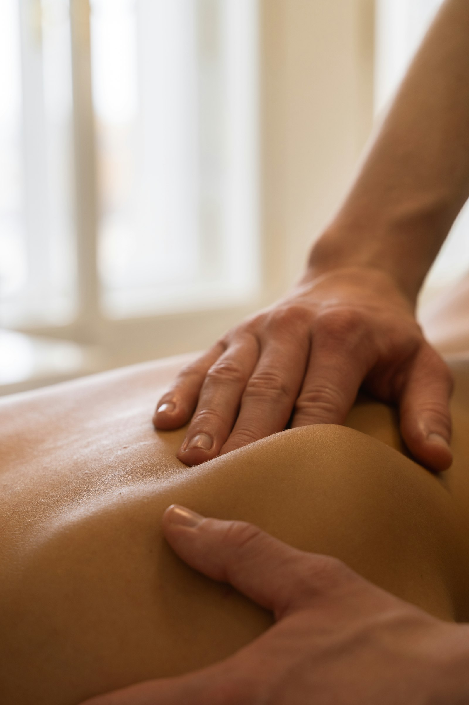

Pressão sustentada e lenta sobre a fáscia, o tecido que envolve músculos e articulações, para desfazer restrições que o corpo carrega há tempos.
A fáscia é uma rede de tecido conjuntivo que envolve cada músculo, órgão e articulação do corpo. Quando ela perde a elasticidade, por má postura, esforço repetitivo, cirurgias ou estresse acumulado, surgem pontos de tensão que restringem o movimento e geram dor, muitas vezes longe de onde ela realmente começou.
A Liberação Miofascial Clássica trabalha exatamente nesses pontos, com uma pressão contínua e sem pressa, esperando o próprio tecido responder e se soltar.

Diferente de uma massagem tradicional, a Liberação Miofascial usa pouco deslizamento. As mãos de Rosana encontram o ponto de restrição e sustentam uma pressão firme e constante, dando tempo para a fáscia relaxar suas camadas, uma a uma.
É um trabalho de escuta com as mãos: sentir onde o tecido resiste e esperar o momento certo de ceder, sem forçar.
Ao tratar a causa na fáscia, o alívio da dor tende a durar mais do que uma massagem convencional.
Com a fáscia mais livre, o corpo recupera amplitude de movimento e sente menos rigidez no dia a dia.
Pressão firme, mas nunca invasiva. O ritmo é sempre ditado pelo que o seu corpo permite.
"Cada tensão tem uma história. Meu trabalho é dar tempo pro corpo contar essa história e se soltar."